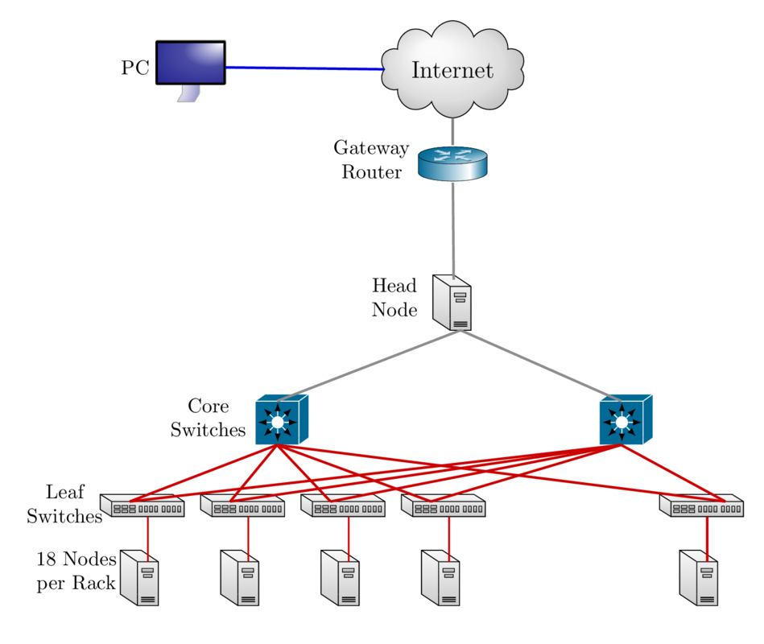

Maia
- 32-core Symmetric Multiprocessor (SMP) system available to all Lehigh Faculty, Staff and Students
- dual 16-core AMD Opteron 6380 2.5GHz CPU
- 128GB RAM and 4TB HDD
- Theoretical Performance: 640 GFLOPs (640 billion floating point operations per second)
- Access: Batch Scheduled, no interactive access to Maia
\[ GFLOPs = cores \times clock \times \frac{FLOPs}{cycle} \]
Introduction to Linux & HPC
2017 HPC Workshop - Parallel Programming
https://researchcomputing.lehigh.edu
Research Computing Resources
Research Computing Resources
- Sol
- Lehigh's Flagship High Performance Computing Cluster
- 9 nodes, dual 10-core Intel Xeon E5-2650 v3 2.3GHz CPU, 25MB Cache, 128GB RAM
- 25 nodes, dual 12-core Intel Xeon E5-2670 v3 2.3Ghz CPU, 30 MB Cache, 128GB
RAM
- Two nVIDIA GTX 1080 GPU cards per node
- Expansion by end of March
- 8 nodes, dual 12-core Intel Xeon E5-2670 v3 2.3Ghz CPU, 30 MB Cache, 128GB RAM
- 13 nodes, dual 12-core Intel Xeon E5-2650 v4 2.2GHz CPU, 30 MB Cache, 64GB RAM
- 2:1 oversubscribed Infiniband EDR (100Gb/s) interconnect fabric
- Theoretical Performance: 47.25 TFLOPs (CPU) + 12.850 TFLOPs (GPU)
- Each GTX card provides 8.873 TFLOPs of single precision performance but only 257 GFLOPs of double precision performance
- Access: Batch Scheduled, interactive on login node for compiling, editing only
LTS Managed Faculty Resources
- Monocacy: Ben Felzer, Earth & Environmental Sciences
- Eight nodes, dual 8-core Intel Xeon E5-2650v2, 2.6GHz, 64GB RAM
- Theoretical Performance: 2.662TFlops
- Eight nodes, dual 8-core Intel Xeon E5-2650v2, 2.6GHz, 64GB RAM
- Eigen: Heather Jaeger, Chemistry
- Twenty nodes, dual 8-core Intel Xeon E5-2650v2, 2.6GHz, 64GB RAM
- Theoretical Performance: 6.656TFlops
- Twenty nodes, dual 8-core Intel Xeon E5-2650v2, 2.6GHz, 64GB RAM
- Baltrusaitislab: Jonas Baltrusaitis, Chemical Engineering
- Three nodes, dual 16-core AMD Opteron 6376, 2.3Ghz, 128GB RAM
- Theoretical Performance: 1.766TFlops
- Three nodes, dual 16-core AMD Opteron 6376, 2.3Ghz, 128GB RAM
- Pisces: Keith Moored, Mechanical Engineering and Mechanics
- Six nodes, dual 10-core Intel Xeon E5-2650v3, 2.3GHz, 64GB RAM, nVIDIA Tesla K80
- Theoretical Performance: 4.416 TFlops (CPU) + 17.46TFlops (GPU)
- Six nodes, dual 10-core Intel Xeon E5-2650v3, 2.3GHz, 64GB RAM, nVIDIA Tesla K80
Total Computational Resources Supported
- CPU
- Cores: 1980
- Memory: 8.69 TB
- Performance: 63.39 TFLOPs
- GPU
- CUDA Cores: 157952
- Memory: 544 GB
- Performance: 30.32 TFLOPs (463.816 SP TFLOPs)
Accessing Research Computing Resources
- Sol & Faculty Clusters: accessible using ssh while on Lehigh's network
ssh username@clustername.cc.lehigh.edu
- Maia: No direct access to Maia, instead login to Polaris
ssh username@polaris.cc.lehigh.edu- Polaris is a gateway that also hosts the batch scheduler for Maia
- No computing software including compilers is available on Polaris
- Login to Polaris and request computing time on Maia including interactive access
- On Polaris, run the
maiashellcommand to get interactive access to Maia for 15 minutes.
- On Polaris, run the
- If you are not on Lehigh's network, login to the ssh gateway to get to Research Computing resources
ssh username@ssh.cc.lehigh.edu
Directory Structure
- All files are arranged in a hierarchial structure, like an inverted tree.
- The top of the hierarchy is traditionally called root (written as a slash / )
Relative & Absolute Path
- Path means a position in the directory tree.
- You can use either the relative path or absolute path
- In relative path expression
- (one dot or period) is the current working directory
- (two dots or periods) is one directory up
- You can combine . and .. to navigate the filee system hierarchy.
- the path is not defined uniquely and does depend on the current path.
- is unique only if your current working directory is your home directory.
- In absolute path expression
- the path is defined uniquely and does not depend on the current path
- /tmp is unique since /tmp is the abolute path
Some Linux Terms (also called variables)
- HOME : Your Home Directory on the system, /home/username
- This is where you should be when you login the first time
- Don't believe me, type
pwdand hit enter
- PATH : List of directories to search when executing a command
- Enter
avogadroat the command prompt - You should see an error saying
command not found
- Enter
Linux Commands
pwd: print working directory, gives the absolute path of your current- location in the directory hierarchy
cd dirname: change to folder calleddirname- If you omit directory name, you will end up in your home directory
- Enter
cd /share/ceph/hej213chm488/
mkdir dirname: create a directory calleddirname- Create a directory replacing dirname with your username and cd to that directory (This is the location where you will save all your work for this course.)
- I would enter the command
mkdir alp514followed bycd alp514 - Use the
pwdcommand to check your current location
cp file1 file2: command to copy file1 to file2- You can use absolute or relative path for the source and destination
cp ../file . - If you need to copy over a directory and its contents, add a
-r flag
- You can use absolute or relative path for the source and destination
Linux Command (contd)
rm file1: delete a file called file1- Unlike other OS's, once you delete a file it cannot be deleted.
ls: list contents of current directory- If you provide a directory path as an argument, then the contents of that directory will be listed
echo: prints whatever follows to the screenecho $HOME: prints the contents of the variable HOME i.e. your home directory to the screen
Exercise
- Logon to Sol
- Change to your storage directory
cd /share/ceph/hpc2017/${USER}
- Copy workshop files to your current directory
cp -r /share/ceph/hpc2017/alp514/sum2017 .
File Editing
- The two most commonly used editors on Linux/Unix systems are:
- vi or vim (vi improved)
- emacs
- vi/vim is installed by default on Linux/Unix systems and has only a command
- line interface (CLI).
- emacs has both a CLI and a graphical user interface (GUI).
- Other editors that you may come across on *nix systems
- kate: default editor for KDE.
- gedit: default text editor for GNOME desktop environment.
- gvim: GUI version of vim
- pico: console based plain text editor
- nano: GNU.org clone of pico
- kwrite: editor by KDE.
vi commands
| Inserting/Appending Text | Command |
|---|---|
| insert at cursor | i |
| insert at beginning of line | I |
| append after cursor | a |
| append at end of line | A |
| newline after cursor in insert mode | o |
| newline before cursor in insert mode | O |
| append at end of line | ea |
| exit insert mode | ESC |
| Cursor Movement | Command |
|---|---|
| move left | h |
| move down | j |
| move up | k |
| move right | l |
| jump to beginning of line | ^ |
| jump to end of line | $ |
| goto line n | nG |
| goto top of file | 1G |
| goto end of file | G |
| move one page up | CNTRL-u |
| move one page down | CNTRL-d |
vi commands
| File Manipulation | Command |
|---|---|
| save file | :w |
| save file and exit | :wq |
| quit | :q |
| quit without saving | :q! |
| delete a line | dd |
| delete n lines | ndd |
| paste deleted line after cursor | p |
| paste before cursor | P |
| undo edit | u |
| delete from cursor to end of line | D |
| File Manipulation | Command |
|---|---|
| replace a character | r |
| join next line to current | J |
| change a line | cc |
| change a word | cw |
| change to end of line | c$ |
| delete a character | x |
| delete a word | dw |
| edit/open file | :e file |
| insert file | :r file |
Available Software
- Commercial, Free and Open source software is installed on
- Software is managed using module environment
- Why? We may have different versions of same software or software built with different compilers
- Module environment allows you to dynamically change your *nix environment based on software being used
- Standard on many University and national High Performance Computing resource since circa 2011
Module Command
| Command | Description |
|---|---|
module avail |
show list of software available on resource |
module load abc |
add software abc to your environment (modify your PATH, LD_LIBRARY_PATH etc as needed) |
module unload abc |
remove abc from your environment |
module swap abc1 abc2 |
swap abc1 with abc2 in your environment |
module purge |
remove all modules from your environment |
module show abc |
display what variables are added or modified in your environment |
module help abc |
display help message for the module abc |
- Users who prefer not to use the module environment will need to modify their
.bashrc or .tcshrc files. Run
module showfor list variables that need modified, appended or prepended
Software on Sol

Installed Software
- Chemistry/Materials Science
- CPMD
- GAMESS
- Gaussian
- NWCHEM
- Quantum Espresso
- VASP
- Molecular Dynamics
- Desmond
- GROMACS
- LAMMPS
- NAMD
- Computational Fluid Dynamics
- Abaqus
- Ansys
- Comsol
- OpenFOAM
- OpenSees
- Math
- GNU Octave
- Magma
- Maple
- Mathematica
- Matlab
More Software
- Scripting Languages
- R
- Perl
- Python
- Compilers
- GNU
- Intel
- PGI
- CUDA
- Parallel Programming
- MVAPICH2
- Libraries
- BLAS/LAPACK/GSL/SCALAPACK
- Boost
- FFTW
- Intel MKL
- HDF5
- NetCDF
- METIS/PARMETIS
- PetSc
- QHull/QRupdate
- SuiteSparse
- SuperLU
More Software
- Visualization Tools
- Avogadro
- GaussView
- GNUPlot
- VMD
- Other Tools
- CMake
- Gurobi
- Scons
- You can always install a software in your home directory
- Stay compliant with software licensing
- Modify your .bashrc/.tcshrc to add software to your path, OR
- create a module and dynamically load it so that it doesn't interfere
with other software installed on the system
- e.g. You might want to use openmpi instead of mvapich2
- the system admin may not want install it system wide for just one user
- Add the directory where you will install the module files to the variable MODULEPATH in .bashrc/.tcshrc
# My .bashrc file
export MODULEPATH=${MODULEPATH}:/home/alp514/modulefiles
Module File Example

Cluster Environment
- A cluster is a group of computers (nodes) that works together closely
Two types of nodes
- Head/Login Node
- Compute Node
Multi-user environment
Each user may have multiple jobs running simultaneously

How to run jobs
- All compute intensive jobs are batch scheduled
- Write a script to submit jobs to a scheduler
- need to have some background in shell scripting (bash/tcsh)
- Need to specify
- Resources required (which depends on configuration)
- number of nodes
- number of processes per node
- memory per node
- How long do you want the resources
- have an estimate for how long your job will run
- Which queue to submit jobs
- Resources required (which depends on configuration)
Batch Queuing System
A software that manages resources (CPU time, memory, etc) and schedules job execution
- Sol: Simple Linux Utility for Resource Management (SLURM)
- Others: Portable Batch System (PBS)
- Scheduler: Maui
- Resource Manager: Torque
- Allocation Manager: Gold
A job can be considered as a user’s request to use a certain amount of resources for a certain amount of time
The batch queuing system determines
- The order jobs are executed
- On which node(s) jobs are executed
Job Scheduling
Map jobs onto the node-time space
- Assuming CPU time is the only resource
Need to find a balance between
- Honoring the order in which jobs are received
- Maximizing resource utilization

Backfilling
- A strategy to improve utilization
- Allow a job to jump ahead of others when there are enough idle nodes
- Must not affect the estimated start time of the job with the highest priority

How much time must I request
- Ask for an amount of time that is
- Long enough for your job to complete
- As short as possible to increase the chance of backfilling


Available Queues
- Sol
| Queue Name | Max Runtime in hours | Max SU consumed node per hour |
|---|---|---|
| lts | 72 | 20 |
| imlab | 48 | 22 |
| imlab-gpu | 48 | 24 |
| eng | 72 | 24 |
| engc | 72 | 24 |
- Maia
| Queue Name | Max Runtime in hours | Max Simultaneous Core-hours |
|---|---|---|
| smp-test | 1 | 4 |
| smp | 96 | 384 |
Queues on Faculty Clusters
| Cluster | Queue | Max Runtime |
|---|---|---|
| Pisces | normal | 4 days |
| Monocacy | normal | 4 days |
| Eigen | adf | 14 days |
| normal | 14 days | |
| long | 28 days |
How much memory can I use?
The amount of installed memory less the amount that is used by the operating system and other utilities
A general rule of thumb on most HPC resources: leave 1-2GB for the OS to run.
Sol: Max memory used per node should not exceed 126GB.
- nodes in lts partition have ~6.4GB/core
- max memory 6.3GB/core
- nodes in imlab & imlab-gpu partition have ~5.3GB/core
- max memory 5.25GB/core
- if you need to run a single core job that requires 10GB memory in the imlab partition, you need to request 2 cores even though you are only using
1 core.
- nodes in lts partition have ~6.4GB/core
Maia: Users need to specify memory required in their submit script. Max memory that should be requested is 126GB.
Useful SLURM Directives
| SLURM Directive | Description |
|---|---|
| #SBATCH --partition=queuename | Submit job to the queuename queue. |
| #SBATCH --time=hh:mm:ss | Request resources to run job for hh hours, mm minutes and ss seconds. |
| #SBATCH --nodes=m | Request resources to run job on m nodes. |
| #SBATCH --ntasks-per-node=n | Request resources to run job on n processors on each node requested. |
| #SBATCH --ntasks=n | Request resources to run job on a total of n processors. |
| #SBATCH --mem=x[M,G,T] | Request x[M,G or T]B per node requested |
| #SBATCH --job-name=jobname | Provide a name, jobname to your job. |
| #SBATCH --output=filename.out | Write SLURM standard output to file filename.out. |
| #SBATCH --error=filename.err | Write SLURM standard error to file filename.err. |
| #SBATCH --mail-type=events | Send an email after job status events is reached. |
| events can be NONE, BEGIN, END, FAIL, REQUEUE, ALL, TIME_LIMIT(_90,80) | |
| #SBATCH --mail-user=address | Address to send email. |
| #SBATCH --account=mypi | charge job to the mypi account |
Useful SLURM Directives (contd)
| SLURM Directive | Description |
|---|---|
| Request a quality of service (qos) for the job. | |
| #SBATCH --qos=nogpu | imlab partition has a qos of nogpu. |
| Job will remain in queue indefinitely if you do not specify qos | |
| Specifies a comma delimited list of generic consumable resources | |
| #SBATCH --gres=gpu:# | To use gpus on imlab-gpu partition, you need to request gpus |
| You can request 1 or 2 gpus with a minimum of 1 core or cpu per gpu |
- SLURM can also take short hand notation for the directives
| Long Form | Short Form |
|---|---|
| --partition=queuename | -p queuename |
| --time=hh:mm:ss | -t hh:mm:ss |
| --nodes=m | -N m |
| --ntasks-per-node=n | -n n |
| --ntasks=n | -n n |
| --account=mypi | -A mypi |
Useful PBS Directives
| PBS Directive | Description |
|---|---|
| #PBS -q queuename | Submit job to the queuename queue. |
| #PBS -l walltime=hh:mm:ss | Request resources to run job for hh hours, mm minutes and ss seconds. |
| #PBS -l nodes=m:ppn=n | Request resources to run job on n processors each on m nodes. |
| #PBS -l mem=xGB | Request xGB per node requested, applicable on Maia only |
| #PBS -N jobname | Provide a name, jobname to your job. |
| #PBS -o filename.out | Write PBS standard output to file filename.out. |
| #PBS -e filename.err | Write PBS standard error to file filename.err. |
| #PBS -j oe | Combine PBS standard output and error to the same file. |
| #PBS -M your email address | Address to send email. |
| #PBS -m status | Send an email after job status status is reached. |
| status can be a (abort), b (begin) or e (end). The arguments can be combined | |
| for e.g. abe will send email when job begins and either aborts or ends |
Useful PBS/SLURM environmental variables
| SLURM Command | Description | PBS Command |
|---|---|---|
| SLURM_SUBMIT_DIR | Directory where the qsub command was executed |
PBS_O_WORKDIR |
| SLURM_JOB_NODELIST | Name of the file that contains a list of the HOSTS provided for the job | PBS_NODEFILE |
| SLURM_NTASKS | Total number of cores for job | PBS_NP |
| SLURM_JOBID | Job ID number given to this job | PBS_JOBID |
| SLURM_JOB_PARTITION | Queue job is running in | PBS_QUEUE |
| Walltime in secs requested | PBS_WALLTIME | |
| Name of the job. This can be set using the -N option in the PBS script | PBS_JOBNAME | |
| Indicates job type, PBS_BATCH or PBS_INTERACTIVE | PBS_ENVIRONMENT | |
| value of the SHELL variable in the environment in which qsub was executed | PBS_O_SHELL | |
| Home directory of the user running qsub | PBS_O_HOME |
Basic Job Manager Commands
- Submission
- Monitoring
- Manipulating
- Reporting
Job Types: Interactive
- Set up an interactive environment on compute nodes for users
Purpose: testing and debugging code. Do not run jobs on head node!!!
PBS:
qsub -I -V -l walltime=<hh:mm:ss>,nodes=<# of nodes>:ppn=<# of core/node> -q <queue name>SLURM:
srun --time=<hh:mm:ss> --nodes=<# of nodes> --ntasks-per-node=<# of core/node> -p <queue name> --pty /bin/bash --loginRun a job interactively replace
--pty /bin/bash --loginwith the appropriate command.- For e.g.
srun -t 20 -n 1 -p imlab --qos=nogpu $(which lammps) -in in.lj -var x 1 -var n 1 - Default values are 3 days, 1 node, 20 tasks per node and lts partition
- For e.g.
Job Types: Batch
- Executed using a batch script without user intervention
- Advantage: system takes care of running the job
- Disadvantage: cannot change sequence of commands after submission
- Useful for Production runs
Minimal submit script for Serial Jobs
#!/bin/bash
#PBS -q smp
#PBS -l walltime=1:00:00
#PBS -l nodes=1:ppn=1
#PBS -l mem=4GB
#PBS -N myjob
cd ${PBS_O_WORKDIR}
./myjob < filename.in > filename.out
#!/bin/bash
#SBATCH --partition=lts
#SBATCH --time=1:00:00
#SBATCH --nodes=1
#SBATCH --ntasks-per-node=1
#SBATCH --job-name myjob
cd ${SLURM_SUBMIT_DIR}
./myjob < filename.in > filename.out
Minimal submit script for MPI Job
#!/bin/bash
#SBATCH --partition=lts
#SBATCH --time=1:00:00
#SBATCH --nodes=2
#SBATCH --ntasks-per-node=20
## For --partition=imlab,
### use --ntasks-per-node=22
### and --qos=nogpu
#SBATCH --job-name myjob
module load mvapich2
cd ${SLURM_SUBMIT_DIR}
srun ./myjob < filename.in > filename.out
exit
Minimal submit script for OpenMP Job
#!/bin/tcsh
#SBATCH --partition=imlab
# Directives can be combined on one line
#SBATCH --time=1:00:00 --nodes=1 --ntasks-per-node=22
#SBATCH --qos=nogpu
#SBATCH --job-name myjob
cd ${SLURM_SUBMIT_DIR}
# Use either
setenv OMP_NUM_THREADS 22
./myjob < filename.in > filename.out
# OR
OMP_NUM_THREADS=22 ./myjob < filename.in > filename.out
exit
Minimal submit script for LAMMPS GPU job
#!/bin/tcsh
#SBATCH --partition=imlab
# Directives can be combined on one line
#SBATCH --time=1:00:00
#SBATCH --nodes=1
# 1 CPU can be be paired with only 1 GPU
# 1 GPU can be paired with all 24 CPUs
#SBATCH --ntasks-per-node=1
#SBATCH --gres=gpu:1
# Need both GPUs, use --gres=gpu:2
#SBATCH --job-name myjob
cd ${SLURM_SUBMIT_DIR}
# Load LAMMPS Module
module load lammps/17nov16-gpu
# Run LAMMPS for input file in.lj
srun $(which lammps) -in in.lj -sf gpu -pk gpu 1 gpuID ${CUDA_VISIBLE_DEVICE}
exit
Submitting Batch Jobs
- PBS:
qsub filename SLURM:
sbatch filenameqsubandsbatchcan take the options for#PBSand#SBATCHas command line argumentsqsub -l walltime=1:00:00,nodes=1:ppn=16 -q normal filenamesbatch --time=1:00:00 --nodes=1 --ntasks-per-node=20 -p lts filename
Workshop Instructions
- Use
ltspartition for OpenMP and MPI exercises - Use
imlab-gpupartition for OpenACC exercise - Running exercises interactively
- OpenMP: To run
myexecusing 4 OpenMP Threadsexport OMP_NUM_THREADS=4; srun -p lts -n 1 -c 4 ./myexec
- OpenACC: To run
myexecon 1 GPUsrun -p imlab-gpu -n 1 --gres=gpu:1 ./myexec
- MPI: To run
myexecon y nodes with z total tasks (z/y tasks per node)srun -p lts -n z -N y ./myexec
- OpenMP: To run
Monitoring & Manipulating Jobs
| SLURM Command | Description | PBS Command |
|---|---|---|
| squeue | check job status (all jobs) | qstat |
| squeue -u username | check job status of user username | qstat -u username |
| squeue --start | Show estimated start time of jobs in queue | showstart jobid |
| scontrol show job jobid | Check status of your job identified by jobid | checkjob jobid |
| scancel jobid | Cancel your job identified by jobid | qdel jobid |
| scontrol hold jobid | Put your job identified by jobid on hold | qhold jobid |
| scontrol release jobid | Release the hold that you put on jobid | qrls jobid |
- The following scripts written by RC staff can also be used for monitoring jobs.
- checkq:
squeuewith additional useful option. - checkload:
sinfowith additional options to show load on compute nodes.
- checkq:
Usage Reporting
- sacct: displays accounting data for all jobs and job steps in the SLURM job accounting log or Slurm database
sshare: Tool for listing the shares of associations to a cluster.
We have created scripts based on these to provide usage reporting
-
alloc_summary.sh- included in your .bash_profile
- prints allocation usage on your login shell
-
balance- prints allocation usage summary
-
solreport- obtain your monthly usage report
- PIs can obtain usage report for all or specific users on their allocation
- use
--helpfor usage information
-
Usage Reporting

Online Usage Reporting: Sol Cluster
Online Usage Reporting: lts partition
Online Usage Reporting: imlab & imlab-gpu partitions
Online Usage Reporting
- Scrollable Usage for entire cluster
- For a specific PI:
- Replace lts with a PI's name in the following link
- Usage plots are restricted to Lehigh IPs
Need to run multiple jobs in sequence?
- Option 1: Submit jobs as soon as previous jobs complete
Option 2: Submit jobs with a dependency
You want to run several serial processor jobs on
- one node: your submit script should be able to run several serial
jobs in background and then use the
waitcommand for all jobs to finish - more than one node: this requires some background in scripting but the idea is the same as above
- one node: your submit script should be able to run several serial
jobs in background and then use the
Additional Help & Information
- Issue with running jobs or need help to get started:
- Open a help ticket: http://lehigh.edu/go/rchelp
- More Information
- Subscribe
- Research Computing Mailing List: https://lists.lehigh.edu/mailman/listinfo/hpc-l
- HPC Training Google Groups: hpctraining-list+subscribe@lehigh.edu